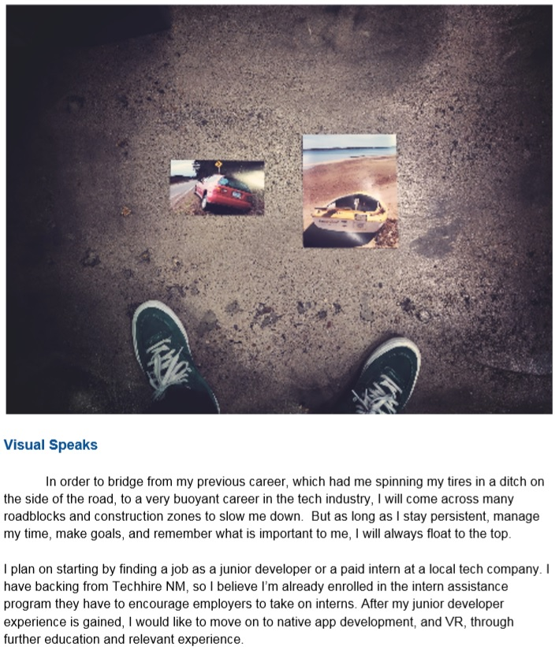

Last Update: 2/18/19
Career Buddy: Scott Wells
I love to refinish/build furniture. I have sold many pieces of high quality furniture. But it requires development and use of the left and right brain. The left brain is able to calculate cost/return, quantities, time constraints and schedules, and procedures. The right brain is required to judge appearance, colors, creativity and new approaches, and style. The end result is what my left and right brain have settled to have an economically produced, high quality product.
Hi, my name is Wyatt. I help develop a mobile web application. I am doing this at work, with coding skills I developed after taking the Deep Dive Coding Bootcamp. Do you work in mobile app development?
Wow.
This week has been amazing! I have met many awesome, like minded people with tons of great interests. I can't
believe how much I have learned, both in class and on my own. I went from writing 'hello world' programs to building databases,
researching data design, and writing web pages. I even had some time to think introspectively to reflect on
my career goals. I also was able to attend a meeting that showcased a local technology leader, and was interested in
what he and his team was involved on, specifically the AI software able to track firearms in security feed, real time.
I could not be happier this week!😁
This week has been a disaster. I was able to complete all of my work early on monday given it was a holiday, and I am very thankful for that because I had an unexpected setback with my computer. It would not turn on in class on Tuesday, and left me high and dry. I was able to leave for a short period of time to find a replacement, but the machine is sub optimal, and it is very tedious to work on. Additionally the extra time it took to set up the toolset also took its toll on my work!
I am not breezing through this week like I was last week. Information is coming at me very quickly, and I am learning it very slowly. Object Oriented Programming is not a simple thing to learn. PHP is hard. Javascript is hard. I feel like a crazy person because I go from very happy and excited when things work to just doomed and frustrated when things are broken or I'm not understanding fundamental information. Lectures are hard to understand because they move very quickly and the vocabulary is foreign. I cannot ask for help very well, because I don't know what I don't know. Last week I was excited about what I was learning... this week I dread it, because every time I make progress, it feels like the last time.
On the other hand, the tech demo was awesome. I loved seeing what everyone was doing, and it gave me a moral boost, and kind of told me the "You can do it!" I needed. My favorite app was the one that saved clips from Podcasts so you could send them to your friends.
I am feeling more confident in myself and my ability to learn since working on the CSS. I feel maybe I should focus on what I am picking up easily to avoid getting discouraged. However, even basic JavaScript functions seem to lose me. I really need to be focusing on javascript but I dont even want to look at it ☹. The capstone project is coming along ok. I wonder frequently if we are biting off too much or too little. All I can do is push forward, and not think about it too hard.
Geeksquad seems to feel really comfortable taking their sweet time with my computer. At this point I almost dont really want it back. This new computer, despite being a step down model, has really grown on me, and I think I will use it as my main box for now. I guess there is no harm keeping the old one as a backup? If it ever comes back...?
I liked the generated art demo on Friday, but I feel watching all these awesome demos just tend ot make me feel bad about struggling with making a simple website work. I feel like I'm so lost right now, nobody would ever want to hire me. I dont think I'm really making much progress this week.
This week flew by so fast I barely remember what happened. I did pretty well on my CSS mock up assignment, and was apparently the only one who made a perfect copy of the reference. I finally got a new desk so I won't have to do homework at the kitchen table or couch anymore. I set up another monitor so I will have my laptop screen and an additional screen for homework. This is a lot more important than I originally thought because I am constantly having to look up and reference information to complete assignments. We worked on bootstrap this week and I had no idea what I was doing until I looked up the bootstrap documentation, and I had to use two screens to avoid constant closing and opening of the windows I was using.
I am not a major fan of bootstrap right now, due to its limited use and unintuitive syntax, but I can see how it would be useful if you add in your own custom CSS. The point of the boostrap mock up was to avoid using custom CSS however, so I ended up with a pretty boring website.
Dan also worked on our resumes and gave us pointers to make our resume more readable for employers and to tailor out information that is not really appropriate for a tech resume. We are going to start mock interviews soon, I am very excited. I have been pretty good at interviews, but I admit I have not had many formal interviews in my life, especially in the EMS industry, where your licence and reputation speaks for itself most of the time it seems.
Forbidden Island Reflection: We were instructed to learn how to, and win a game of Forbidden Island this week for pro dev to test out our team dynamic, learn how to function within a team, and hopefully, be successful in our goals. We did win, at the very last minute, and I hope this is a sign of good things to come in our capstone, but it did not come easily. We started off rough, taking more than half an hour to understand the game rules. Then when we started we didnt have a good goal or plan. We were not progressing fast enough, but we were able to pull together and streamline some of the more tedious management rules of the game. Adrian and I were able to make a solid plan just ten minutes before our time was up and executed it perfectly with Hunter providing solid advice. At the end of it all, I think we made good progress, and learned a lot about each other. Afterwards we went to Sister for lunch and talked about the project and other random things. Adrian is very interested in a release party for our capstone project and I think it's a great way to advertise this web app if we ever decide to monetize it.
At the end of the week, we had two speakers that talked to us about very different things. One of them talked to us about thinking algorithmically. I volunteered to play a numbers game in front of the audience, against a program that tried to prevent me from adding three numbers up to 15, by taking away obvious numbers that I would use to complete the equation. I struggled with it quite a bit, and was ultimately unsuccessful. The speaker seemed pleased and jovially announced to the audience how bad I was at the game (not all of us are great at math I suppose haha.) His junior developer, who is a Deep Dive Alumni talked to us about imposture syndrome and ways to overcome it.
Finally, our last presenter was a man who started a mobile coding bootcamp, based out of Albuquerque. He was very pleasant, and charismatic, and talked about how he leveraged a for-profit side of his company to fund a nonprofit side to help underserved teens learn to code. I thought that it was an amazing idea to offer the chance to impoverished teens to earn tech skills, and his story was really inspirational. He seemed to connect with Adrian about his idea to bring a similar function to his reservation.
This reflection is really to long. So Dan, I'll let you move on to the next one... anyways, onwards and upwards to week 5!!!
I am a bit late to the dev journal this week, and I will kep it short. We have a lot on our plate...We have an assignment due this Friday, my portfolio goes under review on Thursday, and we are having an exam on Friday as well. However, I just want to say I am killing it on my Portfolio. I am about 12 hours deep on it and it looks great already. Still have some things to work on and I need to get it up to snuff as far as the styles go, but I am happy about it now. I revamped my whole ProDev site. It is responsive, and a lot cleaner (if I do say so myself.) I am worried about the assignments this week. They are all back end stufdf, and I have to say, back end is not my strong suit. Otherwise, I am caught up on ProDev, you can see my Stove Top Diagram Here. We finished our unit test and are waiting for the next step in Capstone.
PS, I still dont have my computer...........😠